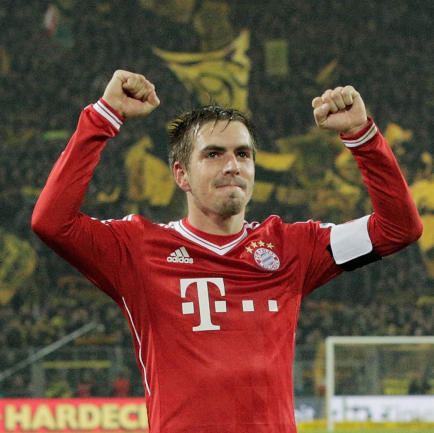
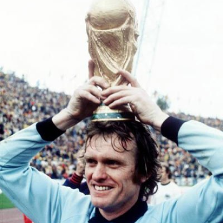
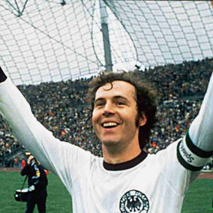
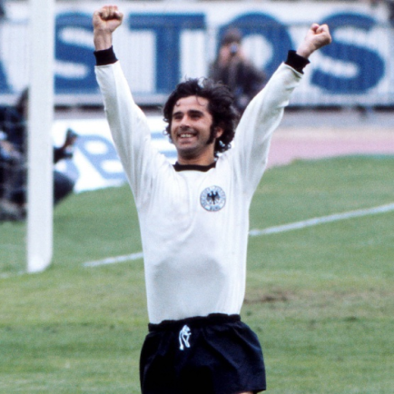

Bayern Munich
O Fußball-Club Bayern München foi fundado em 27 de fevereiro de 1900 por Franz John e outros atletas dissidentes do MTV 1879. Em seus primórdios, o clube ficou conhecido como Schwabinger Bayern, pelo fato de os seus jogadores usarem chapéus de palha. Até 2014, com 24 títulos, os “Bávaros” são, disparados, os maiores vencedores da Bundesliga. Dono da maior torcida do país, é também o representante alemão mais bem-sucedido no âmbito continental. A década de 70, representa a fase áurea do Bayern de Munique. Liderado pelo líbero Franz Beckenbauer, o clube alcançou o tricampeonato da Liga dos Campeões da UEFA (1973-74 a 1975-76 – respectivamente contra Atlético de Madrid – ESP, Leeds United – ENG e Saint-Étienne – FRA) e o Mundial de 1976 contra o Cruzeiro – BRA. Além de jogador, o Kaiser foi técnico, presidente e hoje é presidente honorário do Bayern. Somente em 2000-01, os “Bávaros” voltaram a conquistar a principal competição europeia, contra o Valência – ESP e o Mundial de Clubes contra o Boca Juniors – ARG. Já na temporada 2012-13, o clube chegou a Tríplice Coroa (Liga dos Campeões - contra o Borussia Dortmund - Campeonato Alemão e Copa da Alemanha - contra o Stuttgart).
Títulos
Champions League: 6
Campeonato Alemão: 32
Copa da Alemanha: 20
Mundial: 4
Ídolos
- 
- 
- 
- 
PHILIPP LAHM
é um ex-futebolista alemão que atuava como lateral ou volante. É um dos maiores ídolos da história do Bayern de Munique, clube pela qual atuou entre 2003 e 2017. Foi um dos principais jogadores e capitão da Seleção Alemã até sua última partida, disputando três Copas do Mundo, em 2006, 2010 e 2014. Na última se sagrou campeão, participando do tetracampeonato mundial da Alemanha. Pelo Bayern de Munique, clube que o revelou, somou mais de 500 partidas no total. Jogador polivalente, atuava tanto na lateral-direita, como na esquerda. Depois da chegada de Pep Guardiola ao Bayern de Munique, passou a atuar como volante.
Sepp Maier
Sendo considerado o maior goleiro da história do futebol alemão e um dos maiores goleiros do futebol mundial. Sua passagem pelo Bayern foi entre 1962-1980, contando com vários títulos, três Liga dos Campeões, um Mundial Interclubes e quatro Bundesligas. Sepp Maier também recebeu um apelido de “gato” pelas pernas curvadas e reflexos muito rápidos debaixo das traves. Atuou em 473 partidas, 18 anos defendendo a camisa do Bayern e ganhou três vezes como melhor jogador alemão e também foi eleito o melhor jogador do século da Alemanha.
Franz Beckenbauer
Um dos maiores jogadores da história do futebol alemão, figurou o TOP10 – ao lado de Pelé, Maradona, Zidane e Messi – dos melhores da história mundial do futebol. Atuou como zagueiro central, líbero, meia de ligação auxiliando o ataque e até como volante. Além de ser o capitão do Bayern tricampeão europeu.
Gerd Müller
Foi um dos maiores goleadores do futebol alemão e um dos maiores artilheiros do mundo. Sendo conhecido com o sinônimo de “bola na rede”, apesar de não ser bom em qualidade técnica, seus números chegaram a impressionar. Chegou a marcar 447 gols em 453 jogos pelo time bávaro e 68 gols em 62 jogos pela seleção alemã, com uma média de um gol por jogo, Müller amava colocar a bola na rede adversária em decisões e jogos importantes
Allianz Arena
O Allianz Arena é um estádio em Munique, Alemanha,[2] inaugurado no final de abril de 2005,[3] localizado na parte norte da capital bávara, no distrito de Fröttmaning. É o estádio oficial do Bayern de Munique[2] (substituindo o Olympiastadion) e sediou o jogo de abertura da Copa do Mundo de 2006.[4] O Bayern Munique é dono de 100% do Allianz Arena desde abril de 2006.[5]